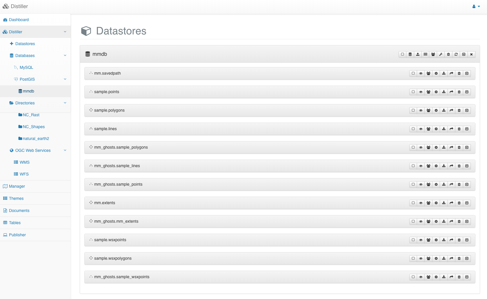

Applications with recorded data¶
Show a map for your table¶
You may want to add a map to your online table edition form. In such a case, there are some rules to respect to get the map functionning properly.
From the Distiller module, click on the Open in manager button to create a new project using the table used to store the data recorded on the field. In case it does not appear directly in the Distiller, please use the refresh button to get up-to-date informations about every geographic tables within the database.
{kind=link}
From the Manager, save you project under a name respecting the
following syntaxe: <schema>___<table>, where <schema> should be
replaced by the schema name (in your case sample ) and
table should be replace by your table name (in your case,
wsxpoints). Then, define the parameters to make your layer
appearing the way want with the activated capabilities you need. After
the settings for your project is over, publish it as any other project
by allowing, at least, the user groups allowed to edit the table.

Now, if you access again the MapMint table client module, you should now get an associated map which zoom on the element you have selected.

Create report for your data¶
Depending on the type of your data you may want to produce a report. MapMint rely on LibreOffice server which is responsible for generating the reports in various formats. MapMint uses its own templating system fully compatible with Open Document Text (odt) format. For producing reports for a table or an elemnt, MapMint will use an odt template file, which is a very basic odt file, and will replace every field found in the template by the expected value(s).
Let suppose that we want to get a table showing the last 10 item recorded and a diagram showing the repartition of record amongst the catogories.
First of all, you have to create an odt file using your local
LibreOffice installation. Then create add a table to the document with
2 rows and 2 columns. Then set Title and Description in the first
row of the table. Right-click on the table, in the contextual menu,
click on the Table properties. Here, set the table name as
[_listing1_] and press OK.
Now, we will add a digram, define it as circular and give a name by
using the Object… itemfrom the contextual menu appearing when you
right-click on the diagram in your document. Here, choose the name
[_diag1_] and press OK.
 |
 |
Finaly, you will need to link your report with your table then to configure the way you want the table and diagram to be filled with.
To do so, go to the MapMint table administration interface, select your table configuration from the list then click on the Report tab to access the report settings.

Here, you can set the following parameters:
| Title | the tab title |
| Select element | check if the report production depends on a selected element |
| Clause | the SQL where condition (true in case no condition) |
| Groups | the user groups allowed to produce such a report |
| Document model | the odt template |
Once you have uploaded your document model, by selecting your local
odt file then pressing the Import button, you shall see every fields
you have defined in your template. So, in your case the diag1 and
listing1.
For every field defined in your template you can define a type and a value to be included in the report.
In your case, the diag1 type should be Diagram and
the value the following SQL query:
(select
$q$ '{$q$ || '''' || a::text || '''' || $q$, '{"Categories"}', $q$ || '''' || b::text || ''''
|| $q$}'$q$
from
(
select
array( select name||$q$ $q$ from sample.categories
where id in (select distinct category from sample.wsxpoints) ) as a,
array(select
array[count(*)] from sample.wsxpoints
group by category order by category) as b
) as v)
For the listing1 field, set the type to SQL Table and the
value to the following SQL query:
(select ARRAY[
ARRAY['Name ','Description ']] ||
array((select array[name::text||$q$ $q$]||array[description::text||$q$ $q$] from sample.wsxpoints order by id desc limit 5))
)
You should press the Save button for your report settings to be saved. Then, as presented in the screen shot below, you should see a new tab, named as you have entitled your report, appearing from the MapMint table client module. If you access it, you can then press Run to ask the server to generate the report. At the end of its processing, it will return a link to the pdf, odt, doc, and html version of the produced report.
 |
 |
Conclusion¶
In this final section, you have leanrt how to add a map to your MapMint table client module and to produce reports out of the recorded data.
You should be now able to setup the MapMint table module from any MapMint instance. Then, create tables, when required, and configure edition forms for theses tables. You know that it is easy and reliable to use MapMint4ME for data collection in relationship with a MapMint server. The final touch was the map view from table client module and the reporting abuot the data collected.
Hoping you had great time reading this material.